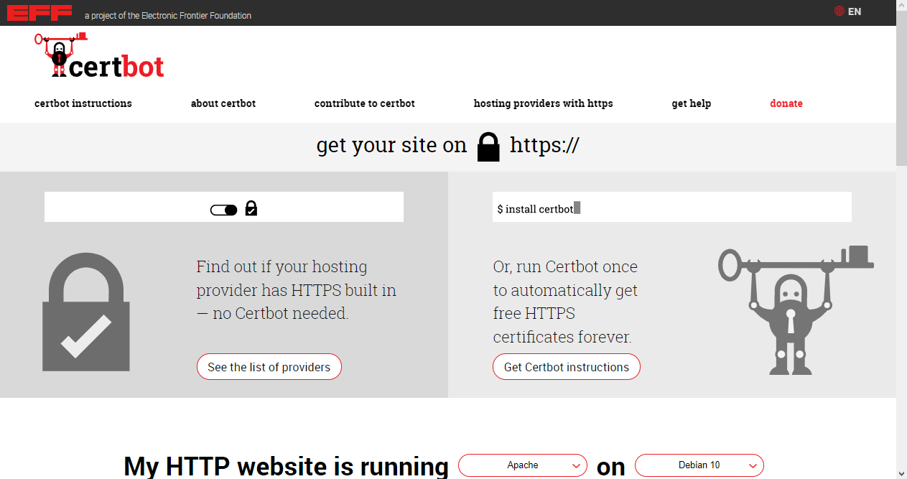

Introduction :
Une fois que vous avez conçu votre site le plus accessible et le plus green IT possible, le dernier choix pour sa mise en place est son hébergement. Le choix de l'hébergeur est important pour avoir un site internet numériquement responsable. Il faut également le paramétrer correctement, en particulier pour bien gérer son cache.
Le choix de l'hébergergeur :
L'efficacité énergétique :
L'un des premiers éléments évoqués pour un hébergeur vert est son efficacité énergétique, mesurée par la PUE (Power Usage Effectiveness ou indicateur d'efficacité énergétique en français). Le PUE calcule le rapport entre la consommation totale du centre de données et celle des équipements informatiques.
L'idéal est d'avoir un PUE valant 1,0. Plus sa valeur est grande moins bonne est l'efficacité énergétique du centre de données. Cet indicateur permet de mettre en évidence l'énergie utilisée par la climatisation, les ondulateurs, la filtration de l'air, la conversion du courant... À l'heure actuelle, la valeur moyenne des PUE des centres de données est d'environ 1,6.
Les hébergeurs ne publient pas systématiquement leur PUE. Généralement, s'ils ne le font pas, ce n'est pas bon signe : c'est qu'ils consomment encore beaucoup d'énergie en utilisant la climatisation (très énergivore) plutôt qu'une source naturelle de rafraîchissement (free-cooling à air ou à eau).
Voici quelques exemples d'hébergeurs publiant de très bons PUE :
| Hébergeur | PUE |
|---|---|
| Neural Hosting | 1,06 |
| OVH | 1,09 |
| Informaniak | 1,10 |
| Ex2 | 1,10 |
Il existe la certification ISO 50 001 permettant d'attester de la performance énergétique. Le français Octup et le suisse Infomaniak possèdent cette certification par exemple.
Les sources d'approvisionnement électrique :
Un certain nombre d'hébergeurs indiquent qu'ils utilisent des énergies vertes. À nouveau, les informations sont plus ou moins précises. Par exemple, le canadien Planet Hoster indique utiliser 100% d'électricité hydraulique alors que le français Neural Hosting affiche "électricité verte" sans plus de précisions... Il est important que ces informations soient prouvées à l'aide de certificats.
La compensation carbone :
Les hébergeurs les plus vertueux compensent leurs émissions de CO2. Il faut alors être attentif à l'inclusion de l'ensemble des émissions de l'entreprise (fabrication, acheminement et recyclage du matériel, déplacements professionnels des collaborateurs, production d'énergie...). À titre d'exemple, Infomaniak compense à 200% ses émissions de CO2.
La récupération de la chaleur dégagée :
Les serveurs produisent de la chaleur. Un certain nombre de centres de données valorisent cette chaleur. Par exemple, Neutral Hosting s'en sert pour chauffer en partie la piscine de la Butte-aux-Cailles à Paris ou des bâtiments résidentiels dans d'autres grandes villes où il est implémenté.
La politique d'achat :
Le choix du matériel peut avoir des impacts importants. Certains serveurs supportent des températures plus élevées et nécessitent unn refroidissement moins important, donc moins énergivore. Le choix de processeurs de faible voltage permet d'économiser de l'énergie. Cela peut sembler paradoxal, mais mathématiquement cela dégrade le score du PUE. C'est pourquoi il est important de prendre en compte les autres critères de cette section.
La politique de renouvellement du matériel :
Nous avons vu que beaucoup d'impacts écologiques proviennent de la production et de la destruction du matériel. Il est donc important de connaître les engagements des hébergeurs en la matière. Il est difficile de trouver des engagements écrits. Neutral Hosting indique qu'il utilise la technique d'immersion liquide de ses serveurs afin d'augmenter leur durée de vie en plus de réduire le bruit généré et de les refroidir efficacement. Infomaniak indique dans sa charte qu'il s'engage à conserver ses serveurs pour une durée minimale de cinq ans et qu'ensuite ils sont réutilisés en interne.
Il est également important de connaître les engagements des hébergeurs en matière de gestion de leurs déchets d'équipemnts électriques et électroniques (DEEE).
La localisation :
Pour gagner en performance et pour moins solliciter le réseau, il est judicieux de choisir un hébergeur proche de la localisation de la majorité des visiteurs du site. Par exemple, un site internet d'une association locale nantaise est principalement visité par des internautes de la région de Nantes. Il est donc pertinent d'héberger ce site dans un centre de données nantais. Au contraire, une entreprise ayant des visiteurs répartis dans l'ensemble de l'Europe choisira un hébergeur ayant son centre de données au coeur de l'Europe.
Le respect des données :
Suivant le pays hébergeant les données, la législation en vigueur n'est pas la même. Dans l'Union Européenne (UE), le Règlement Général sur la Protection des Données (RGPD) prévaut; en Suisse, c'est la Loi fédérale sur la Protection des Données (LPD); aux États-Unis ou avec une entreprise américaine, c'est le Patriot Act qui s'applique. Les données personnelles sont alors moins bien protégées.
Les hébergeurs indépendants :
Outre confier votre site à un hébergeur pour qu'il l'installe dans son centre de données, vous pouvez héberger votre site sur une simple machine ayant une bonne connexion à Internet.
Le collectif CHATONS (collectif des hébergeurs alternatifs, transparents, neutres et solidaires) propose des solutions alternatives aux géants du Web, tels des hébergements gratuits pour des sites d'associations, d'initiatives citoyennes, d'activités artistiques, promouvant les solutions libres...
Enfin, certaines personnes ont même un site internet fonctionnant sur un Rasperry Pi alimenté par un panneau solaire ! C'est par exemple le cas de Low→Techmagazine. Son site est à Barcelone, il profite donc d'un bon ensoleillement, et si le batteries alimentées par les panneaux solaires sont épuisées, le site n'est pas disponible ! Mais est-il nécessaire que le site doit accessible à tout moment du jour et de la nuit ?
Les comparatifs :
Il est possible de comparer les engagements des uns et des autres sur leurs sites internet. Les hébergeurs ont généralement une page dédiée pour expliquer leurs engagements pour être plus verts.
| Hébergeur | Page |
|---|---|
| Ex2 | https://www.ex2.com/hosting/green-hosting |
| HostPapa | https://www.hostpapa.fr/hebergement-web-vert/ |
| Infomaniak | https://www.infomaniak.com/fr/hebergeur-ecologique/charte-ecologique |
| Neutral Hosting | https://neutral.hosting |
| OVHcloud | https://www.ovh.com/fr/manifesto.xml#watercooling |
| PlanetHoster | https://www.planethoster.com/fr/Hebergement-Vert |
Le site Zei (Zéro éco impact) cherche à comparer l'engagement dans la transition écologique des entreprises. Il propose entre autres un comparatif des hébergeurs. Pour le moment, il n'y a que peu d'hébergeurs comparés, mais il faut espérer qu'ils seront de plus en plus nombreux.
Le paramétrage du serveur :
Le certificat SSL :
Pour la sécurisation du site, il est important de mettre en place un certificat SSL afin d'utiliser le protocole HTTPS. Pour les serveurs mutualisés, certains hébergeurs le proposent d'office; chez d'autres hébergeurs, il faut cocher une case pour l'activer.
La mise en place sur un serveur dédié :
Pour les serveurs dédiés, il est nécessaire que vous génériez le certificat SSL vous-même. Vous devez obtenir un certificat SSL d'une autorité de certification. La bonne nouvelle, c'est que l'autorité de certification Let's Encrypt vous propose d'en générer un gratuitement.
- Rendez-vous sur le site https://letsencrypt.org/fr et cliquez sur Commencer.
-
Vous arrivez sur une page de présentation qui vous indique d'utiliser Certbot. Pour cela, cliquez sur le lien puis choisissez votre serveur web (Apache, par exemple), puis la distribution de votre serveur (Debian 10, par exemple).
 - Ensuite, suivez les instructions qui ont été générées en fonction de votre situation.
L'obligation de passer par HTTPS :
Une fois votre site disponible en HTTPS, il est intéressant d'imposer à vos visiteurs d'utiliser cette communication sécurisée. Pour cela, il est possible de rediriger toute demande faite en HTTP vers la même en HTTPS. Cela se réalise avec les lignes suivantes à positionner dans votre configuration d'Apache soit dans le fichier principal de configuration, soit dans un fichier .htaccess à la racine de votre site :
RewriteEngine On
RewriteCond % {HTTPS} off
Rewrite (.*) https://%{HTTP_HOST}%{REQUEST_URI} {R=301,L}
<IfModule mod_headers.c>
Header always set Strict-Transport-Security "max-age=31536000"; includeSubDomains; preload"
</IfModule>Ces lignes font une redirection en utilisant la réécriture d'URL et ajoutet l'en-tête de la requête l'utilisation systématique. HSTS (HTTP Strict Transport Security) pour refuser toute requête en HTTP.
Le cache :
Le cache est un très bon moyen pour optimiser un site internet et ainsi réduire son empreinte environnementale. Il existe plusieurs niveaux de cache.
Le cache du navigateur :
Lorsqu'un visiteur navigue pour la première fois sur un site, il charge tous les éléments pour afficher une première page internet (page HTML, feuilles de style CSS, scripts JavaScript, images...). Tous ces éléments sont conservés en cache un certain temps. Ainsi, s'il navigue sur une autre page du site, il n'a pas besoin de tous les fichiers, mais seulement de ceux qu'il ne possède pas. Si vpis avez le logo de votre entreprise sur toutes vos pages, une feuille de style, etc. ces éléments ne sont pas téléchargés à nouveau. Si l'internaute revient sur une page déjà visitée, normalement aucune ressource n'est envoyée depuis le serveur, ce qui permet de le soulager et de moins solliciter le réseau.
Pour indiquer le temps pendant lequel le navigateur doit utiliser la ressource en cache, plutôt que de le redemander au serveur, il est nécessaire de préciser dans l'en-tête HTTP Cache-Control: max-age=tempsEnSecondes, public. En configurant Apache, il est possible de lui faire intégrer cette information dans ses réponses. Il faut le faire dans le fichier principal de configuration ou dans un fichier .htaccess à la racine du site.
Syntaxe :
<filesMatch "filtreFichier">
Header set Cache-Control "max-age=tempsEnSecondes, public"
</filesMatch>La chaîne de caractères filtreFichier est une expression rationnelle PCRE.
Il est possible parexemple de conserver en cache les pages, les scripts et les feuilles de style pendant 10 jours (864000 secondes) et les images pendant 1 an (31536000 secondes).
<filesMatch ".(css|js|html)$">
Header set Cache-Control "max-age=864000, public"
</filesMatch>
<filesMatch ".(ico|webp|png|gif|svg|avif|jpg)$>
Header set Cache-Control "max-age=315536000, public"
</filesMatch>Pour vérifier le bon fonctionnement, il faut se rendre pour la première fois sur l'une des pages du site et visualiser la réponse à la requête HTTP envoyée dans les outls du développeur.
HTTP/1.1 200 OK
Date: Sun, 25 Jul 2021 12:58:29 GMT
Server: Apache/2.4.43 (Win64) OpenSSL/1.1.1g PHP/7.4.7
Last-Modified: Sun, 25 Jul 2021 12:58:27 GMT
ETag: "712-5c7f23156590a"
Accept-Ranges: bytes
Content-Length: 1810
Cache-Control: max-age=86400, public
Keep-Alive: timeout=5, max=100
Connection: Keep-Alive
Content-Type: text/htmlL'en-tête contient bien la ligne Cache-Control.
Si nous actualisons la page, nous obtenons un code 304 indiquant que la page est celle récupérée en cache :
HTTP/1.1 304 Not Modified
Date: Sun, 25 Jul 2021 13:02:32 GMT
Server: Apache/2.4.43 (Win64) OpenSSL/1.1.1g PHP/7.4.7
Last-Modified: Sun, 25 Jul 2021 12:58:27 GMT
Connection: Keep-Alive
Keep-Alive: timeout=5, max=100
ETag: "712-5c7f23156590a"
Cache-Control: max-age=86400, publicLorsque la ressource demandée est en cache, mais qu'elle a expiré, une requête est envoyée au serveur pour savoir si elle est encore vlable, avec comme en-tête :
If-Modified_Since: datDuFichierEnCacheSi la ressource n'a pas changé, le serveur renvoie le code 304 afin que la ressource en cache soit utilisée. Sinon, la nouvelle version de la ressource est envoyée avec un code 200.
Le cache du serveur web :
Le serveur Apache peut conserver également le résultat de l'exécution de code PHP pour éviter de les réexécuter à chaque fois. Cela peut être réalisé en configurant Apache avec les lignes suivantes :
CacheEnable mem répertoireDuCahe
MCacheSize tailleDuCacheEnOctets
MCacheMaxObjectCount nombreDElementsEnCache
MCacheMinObjectSize tailleMinimale
MCacheMaxObjectSize tailleMaximaleExemple :
CacheEnable mem /cache
MCacheSize 100000000
MCacheMaxObjectCount 1000
MCacheMinObjectSize 100
MCacheMaxObjectSize 1000000Ainsi, si plusieurs internautes demandent successivement une même page générée dynamiquement en PHP, elle est générée pour être envoyée au premier et mise en cache sur le serveur et le second reçoit la page stockée dans le cache. Cette technique est particulièrement intéressante si toutes les pages sont générées dynamiquement à l'aide d'un modèle de page.
Le cache de PHP :
La génération et l'envoi d'une page dynamique sont plus coûteux que l'envoi d'une page statique directement. C'est pourquoi, afin d'accélérer le rendu des pages dynamiques, le code PHP qui a déjà été analysé et transformé en langage intermédiaire (OPcode) est sauvegardé en cache avec OPcache pour éviter de refaire ces étapes. Jusqu'à la version 5.4 de PHP, il était nécessaire d'effectuer des étapes de configuration pour mettre en place OPcache. Depuis PHP 5.5, l'OPcache est installé et activé par défaut. IL n'y a donc rien à faire si vous utilisez une version récente de PHP.
Le cache du serveur de base de données :
Il est également possible d'utiliser un cache pour les requêtes fréquemment envoyées au serveur de base de données. Il faut utiliser un produit supplémentaire tel que la solution open source Redis. Si les autres niveaux de cache ont été correctement mis en place, ce cache n'est nécessaire que sur un site internet sollicitant beaucoup la base de données.
L'étude d'un cas pratique :
L'hébergement :
Pour héberger le site internet associé au livre de référence de ce syllabus, ils ont choisi un des membres du collectif CHATTONS. Le serveur est installé chez un particulier, donc sans climitation ni aucun autre système énergivore. Son PUE doit donc être extrêmementt proche de 1. Il est localisé à Nantes, vu que le lotorat du livre se situe principalement en France ou dans les pays francophones limirophes, et plus minitoritairement au Québec ou en Afrique, voire dans autres pays du monde... Le serveur est une machine qualifiée de "normale, constituée du fond de tiroir" par son propriétaire. Nous sommes bien dans la réutilisation du matériel ! Enfin, il propose tous les services nécessaires pour le site : la possibilité d'utiliser un certificat SSL de Lt's Encrypt, PHP en version 7.4 et des fichiers .htaccess.
Remarque : Nous profitons de cette section pour remercier chaleureusement David Mercereau, le propriétaire de Zici.fr, d'héberger le site du livre.
Le paramétrage :
Le protocole HTTPS a été mis en place comme indiqué précédemment. Enfin, les caches au niveau navigateur et serveur ont également été mis en place.